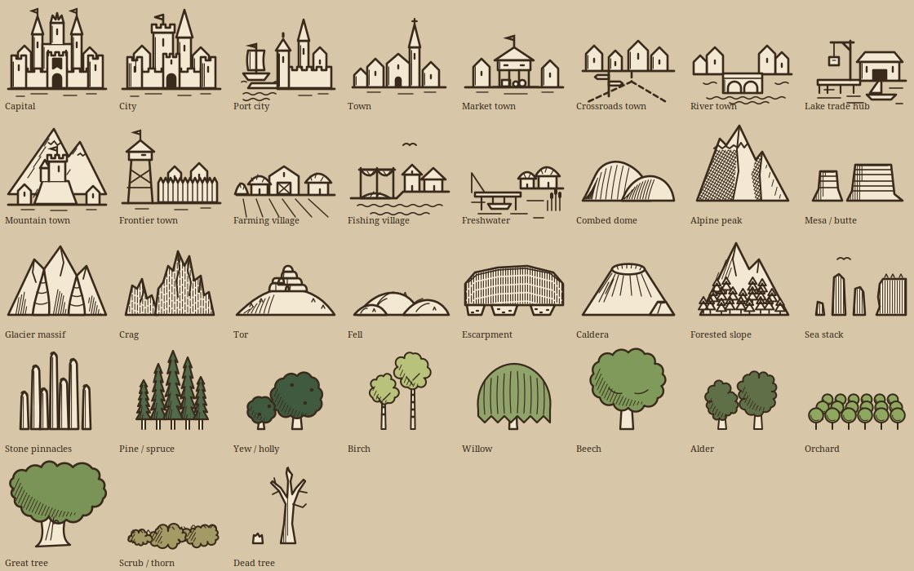
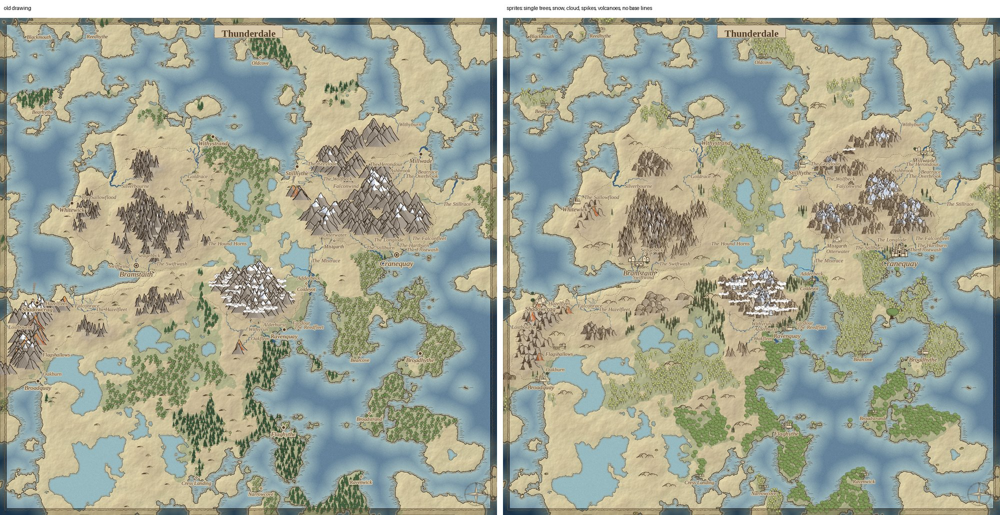
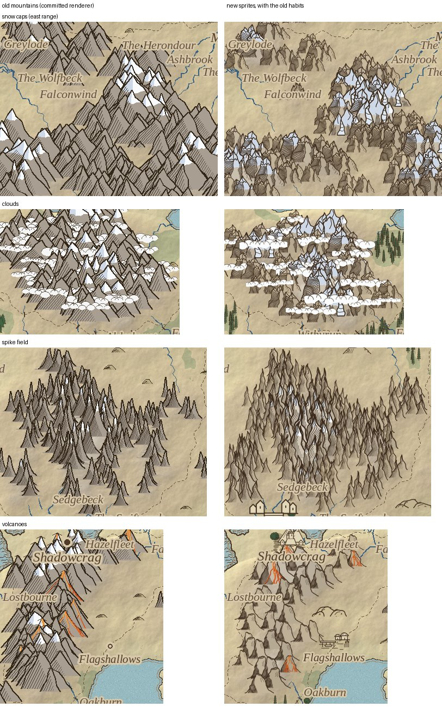
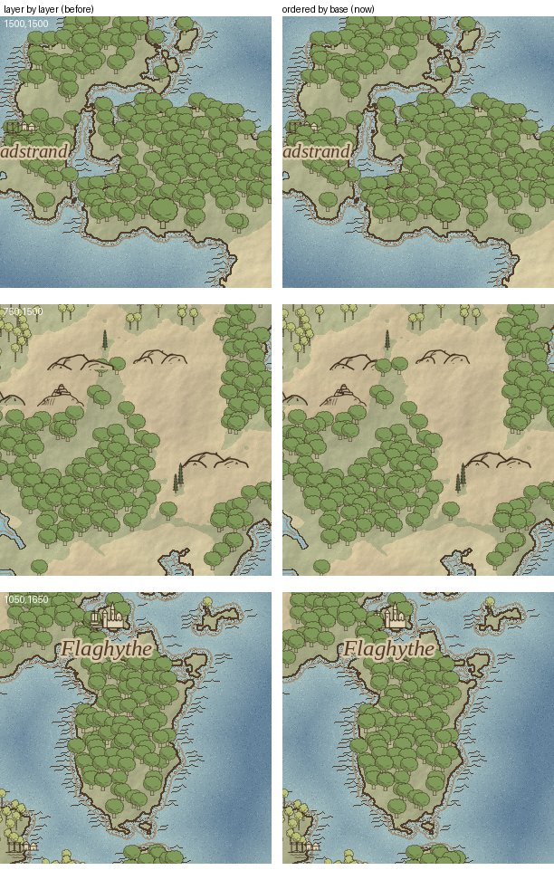
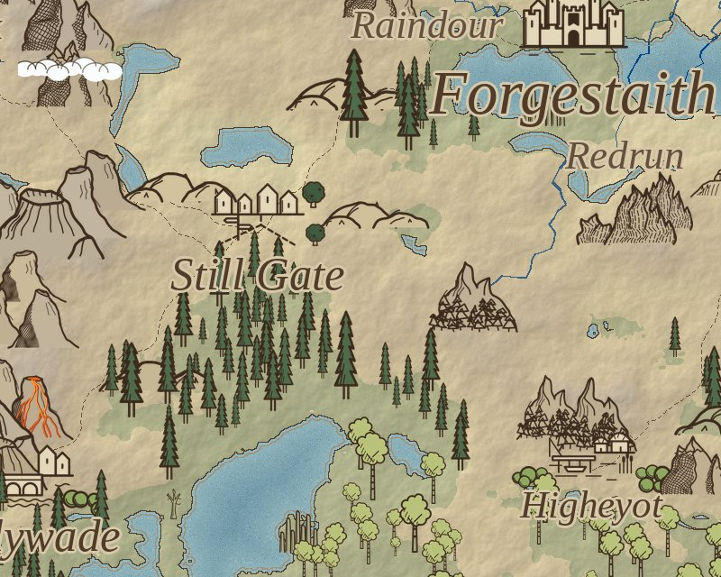

The Living Legends map used to draw itself. Every mountain, tree and town was ink laid down by code I had written: strokes, hatching, snow caps, all of it computed. It looked good, and it was a lot of code for something that is, in the end, a set of symbols stamped on paper.
So I tried the other way round. I asked Claude for sprite sheets and dropped the SVG files it sent back into a folder. Claude Code built the pipeline that turns them into a map.
What Claude drew
Three sheets, 35 symbols: 13 settlements, 12 kinds of terrain, 10 trees.

Every symbol the map can stamp. The settlement row is typed — a capital, a port city, a crossroads town, a lake trade hub — because the generator already knows which kind of place it is putting down.
The sheets did not cover everything the world generator asks for. A second sheet adds 12 more in the same hand: the spike field, the volcano and its plume, the cloud bank. Four tools, 2,220 lines, do the rest. One converts each symbol into a PNG and a paper mask, with warped copies so no two are identical and snow added per summit. One places them. One renders the preview.
Before and after

Thunderdale, the same seed both times. Old drawing code on the left, sprites on the right.
The sprite version puts single trees on the map instead of masses of forest, and the towns are now the shape of what they are. The thing I did not expect is how much the paper shows through.
The mountains were worse, at first
I liked the old mountains better. The new ones had lost four things the old code did well, so we put them back.

Old renderer on the left, sprites on the right, once the old habits were ported over: snow caps that sit on each summit, cloud banks across the tall ranges, spike fields for broken ground, and lava that finds its way downhill.
Draw order does the depth
Drawing the map layer by layer — all the hills, then all the trees — means a tree can sit on top of a tree that is in front of it. The fix is to stamp everything in one pass, ordered by the bottom edge of each sprite, so whatever stands lower on the map is drawn last.

Layer by layer on the left, ordered by base on the right. It is a small difference per tree and a large one per wood.

Up close, at 4096 pixels across.
Where it stands
None of this is wired into the game yet. The renderer is a preview that patches itself over the drawing code; whether it replaces it is a decision I have not made. Two things it would need first: the sprite PNGs committed to the repository, because the game's environment cannot rebuild them, and an answer on what happens at the zoom levels where a stamped symbol stops being convincing.
360 PNGs come out of the converter right now. The map draws with 35 of them.